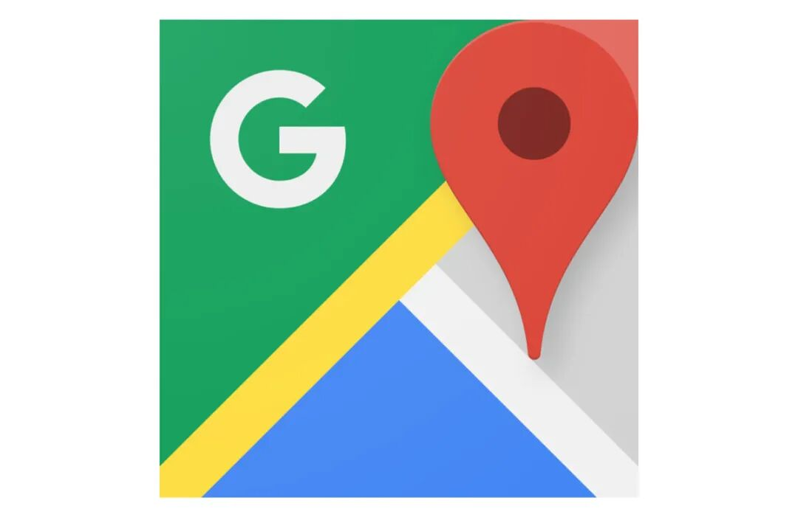

一晃已经有两个月没有更新文章了，也真的是蛮久的。至于不更新的原因嘛，最近跟我有联系的朋友应该会知道，我也会在几周后的文章里面具体说说我过去一段时间都干什么去了。
除了忙我的正事，最近一段时间就是隔离在家，也没有什么好说的。无非就是每天上b站刷刷视频，然后打打LOL，照着下厨房里的菜谱做做菜，打开Keep健健身这样子。
美国的疫情看这个样子估计要持续到年底的节奏，远程办公也渐渐变成了很多人的日常。要是这个时间点回了国还能回得了美国的话，还真的是很想回去住一段时间，反正也都是远程办公没什么差别。
太久没写文章实在不知道写什么，就点评一下我最近用到各种各样杂七杂八的App和服务吧。
Google Map

一直以来Google Map都是手机导航的扛把子，不过餐厅的review一直都有点少的可怜，而且上面的星级也不太有参考价值，所以每次出门找餐馆的时候，我一般都会用Yelp。
不过最近Yelp裁了一波人以后，不知道为啥感觉Yelp的App也不太好用了，不仅经常闪崩，而且有好多信息也更新不太及时。
比如我家附近一家常去的眼镜店，明明人家关门了，Yelp上面却没有准确的更新，反倒是Google Map更新了。
总之看衰Yelp。
bilibili
我是b站好多年的老用户了。今天翻了一下收藏夹，早在2013年我就收藏了一些09的从零单排的视频，一晃也7年过去了。当年那个ACG圈子的小破站，现在也已经是对标Youtube的中国视频巨头了，真的是有点出人意料。
b站上面ML相关的教学视频真的非常全也非常多，比Youtube也毫不逊色，强烈推荐翻墙不方便的朋友。比如说RL的CS285课程：
https://www.bilibili.com/video/BV15441127ua
我自己在上面也上传了不少有关ML-Agents的视频，都贴在这里
https://space.bilibili.com/421694。
还是希望大家多多支持小破站，他们家的视频上传体验非常好，至少要比微信公众号的体验好上不少，所以还是蛮推荐大家分享视频的话可以放在b站上面的。而且他们家看视频是完全没有广告的，这一点要比Youtube强很多。
体态大师
对于我们程序员来说久坐必然会对我们的身姿有所影响，Keep以及B站上面有不少视频教你如何纠正姿势的，但是我是觉得都不够有针对性和系统性。
最近发现的这个体态大师是一个在国内蛮火的健身号，他们提供了一个服务可以根据你的照片来有针对性地制定纠正体态的训练，我试了一期，个人感觉效果还蛮好的，就是每次练完都感觉有点太累了，而且练的时间蛮长的，还有个缺点就是似乎他们的主要目标用户是女生，所以有的时候有点怪怪的。
如果感兴趣的话可以自己去微信公众号搜：体态大师，我这里就不贴啥链接了，以免被人以为是广告。
Shipt
在北美Instacart算是生鲜送货最有名的App了，不过上面并不能送任何中国超市的东西。。。后来偶尔有一次去99 Ranch的时候发现支持用Shipt这个App来搞送货，就尝试了一下，效果还真的很不错。
这里贴一下我的refer码，感兴趣的话可以试一下啦，我个人是觉得要比Instacart好用。
http://share.shipt.com/Tl8DW。
后记
最近空下来打lol打得好开心，然后偶尔玩一下动森。不过我还刚刚开始玩，没有体会到动森有啥乐趣= =，可能我不太适合这种养成类的游戏吧？大家能不能交流一下你觉得动森哪里好玩了？
还有希望疫情早点结束，就可以多多出去玩了。